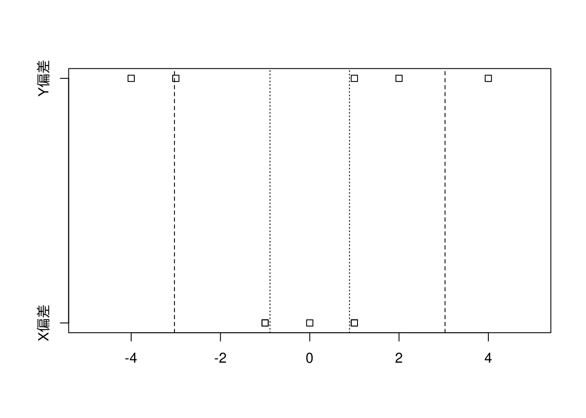

3.1 データの散らばりやバラツキを知りたい
第2講で学んだ平均値（算術平均）は、データを代表する統計量で、ある一点（支点・重心）を示しているに過ぎません。データが平均値の周辺にどのように分布しているかはヒストグラムを使うことで視覚的には確認できますが、統計量として数値的に扱えた方がなにかと便利なはずです。
3.2 バスの到着時刻の例で分散を理解する
蛇足ですが実際の路線バスでは予定時刻より早く到着しないように調整運転がなされていますので、時刻より大幅に早着することは稀です。
ベクトルを読み込みたい場合はscan()関数を使います
x <- scan(file = "./data/P36_図表3-1.csv", sep = ",")
x[1] 32 27 29 34 33 平均値を求めるmean()関数がありますが、ここでは平均値の計算式通りの計算を行っています。
偏差を求める
偏差 = x - 平均値
偏差[1] 1 -4 -2 3 2偏差の総和は必ずゼロ（\(0\)）になります。
偏差の総和を求める
sum(偏差)[1] 0 偏差の二乗和をデータの個数で割ったものは、（標本）分散と呼ばれます。不偏分散と呼ばれる分散は計算式が異なります。Rで分散を計算するvar()関数は不偏分散を求める関数です。
var()関数は不偏分散
var(x)[1] 8.5 偏差の二乗平均値（\(= \sqrt{\mbox{分散}}\)）は標準偏差と呼ばれます。Rで標準偏差を計算するsd()関数は不偏分散のルートを取ったものです。
sd()関数は標準偏差
sd(x)[1] 2.915476
3.3 標準偏差の意味
対象データ
x <- read.csv(file = "./data/P39_図表3-4.csv")
x %>%
df_print()各々の偏差を求める
x %>%
dplyr::mutate(X偏差 = X - mean$X平均値,
Y偏差 = Y - mean$Y平均値) %>%
df_print()各々の標準偏差を求める
偏差と標準偏差を可視化すると下図のようになり、XよりYの方が広範囲に分布していることが分かります。
偏差と標準偏差を可視化する

3.4 度数分布表から標準偏差を求める
対象データ
x <- read.csv(file = "./data/P40_図表3-6.csv",
fileEncoding = "UTF-8")
x %>%
df_print()
第2講の「2−3 度数分布表での平均値」で学んだように度数分布表から平均値（の近似値）は \[\mbox{平均値} \fallingdotseq \sum{(\mbox{階級値} \times \mbox{相対度数})}\] で求めることができます。
度数分布表から平均値を求める
x %>%
dplyr::mutate(AxB = A階級値 * B相対度数) %>%
df_print()度数分布表から平均値を求める
[1] 2
平均値を求められたので \[\mbox{階級の偏差（C階級値-平均値）} = \mbox{階級値} - \mbox{平均値}\] とすると度数分布表の計算値と同じ考え方を適用し \[\mbox{階級の偏差の二乗平均} = \sum{(\mbox{階級の偏差}^2 \times \mbox{相対度数})} = \mbox{分散}\] となります。
度数分布表から分散と階級偏差を求める
度数分布表から分散と階級偏差を求める
練習問題
次の架空のデータの標準偏差を次のステップで計算してみよ。ステップの記載は省略します。
対象データ
データ <- scan(file = "./data/P42_練習問題_v.csv", sep = ",")
データ [1] 6 4 6 6 6 3 7 2 2 8解答例
偏差を求める
偏差 <- データ - 平均値
偏差 [1] 1 -1 1 1 1 -2 2 -3 -3 3二乗偏差を求める
二乗偏差 <- 偏差 ^ 2
二乗偏差 [1] 1 1 1 1 1 4 4 9 9 9標準偏差を求める
標準偏差 <- sqrt(分散)
標準偏差[1] 2
追加問題
P16にある身長データの度数分布表を作り、分散と標準偏差を求めてみましょう。
解答例
度数分布表から平均・分散・標準偏差を求める
度数分布表から分散と標準偏差を求める
度数分布表から分散と標準偏差を求める
生データから平均・分散・標準偏差を求める
生データから平均・分散・標準偏差を求める
"./data/P16_図表1-1 .csv" %>%
readr::read_csv(col_names = FALSE,
show_col_types = FALSE) %>%
tidyr::pivot_longer(cols = dplyr::starts_with("X"),
names_to = "name",
values_to = "value") %>%
dplyr::arrange(name) %>%
dplyr::select(height = value) %>%
dplyr::mutate(偏差 = height - mean(height)) %>%
dplyr::mutate(二乗偏差 = 偏差 ^ 2) %>%
df_print()生データから平均・分散・標準偏差を求める
raw_summary <- "./data/P16_図表1-1 .csv" %>%
readr::read_csv(col_names = FALSE,
show_col_types = FALSE) %>%
tidyr::pivot_longer(cols = dplyr::starts_with("X"),
names_to = "name",
values_to = "value") %>%
dplyr::arrange(name) %>%
dplyr::select(height = value) %>%
dplyr::mutate(偏差 = height - mean(height)) %>%
dplyr::mutate(二乗偏差 = 偏差 ^ 2) %>%
dplyr::summarise(平均 = sum(height) / length(height),
分散 = sum(二乗偏差) / length(height),
標準偏差 = sqrt(分散))
raw_summary %>%
df_print()
度数分布表と生データの平均・分散・標準偏差を比較する
度数分布表からの要約統計量
freq_summary %>%
df_print()生データからの要約統計量
raw_summary %>%
df_print()度数分布表と生データの差
(freq_summary - raw_summary) %>%
df_print()